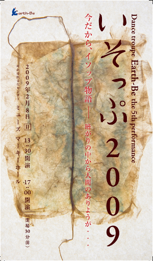

DANCE TROUPE Earth-Be the 5th performance
いそっぷ2009
今だから、イソップ物語 － 暗がりの中から人間のありようが・・・
「うさぎとかめ」「町のネズミと田舎のネズミ」「北風と太陽」などでよく知られている「イソップ寓話」。 動物に置き換えながらも人間の興味深いあらゆる側面…果てしない欲望、執着、虚栄、羨望、信頼と裏切り、 勇気、寛容と愛…を浮き彫りにしています。
“いそっぷ２００９”は寓話集の中から１２話を取り上げ、そのおもしろさを格差、貧困、いじめ、 経済破綻など渦巻く現代社会に置き換えたらどうなるのかを私たちEarth-Be流にダンス作品に創作してみました。
今回の公演は楮作家（和紙造形）加茂孝子さんの作品とのコラボレーション。 彼女の繊細かつダイナミックな作品がＥａｒｔｈ-Beのダンスと舞台でどのような効果を生み出すか今からわくわくしています。
“H20 地球と水の精霊たちへ” 、”オオタカ伝説２００５” 以来、３年半ぶりの満を持した公演です。 よりパワフルかつ大人になったEarth-Beをお楽しみください。
今回座席をはじめて指定にしましたので、お早めにチケットをお求めください。
- 日程2009年2月8日(日)
- 開演時間13:30 & 17:00 (開場は開演の30分前)
- 場所所沢市民文化センター ミューズ マーキーホール ＞ 劇場公式サイト
- 演出･振付石橋寿恵子・Earth-Be
- チケット全席指定 A席 2,500円 B席 2,000円 ※当日券は500円増し
- [TEL]042-973-1484（石橋） [mail] info@earth-be.com
問い合わせ・チケットのご購入 - [TEL]04-2998-6566（所沢市民文化センター ミューズ）
公演当日のお問い合わせ
